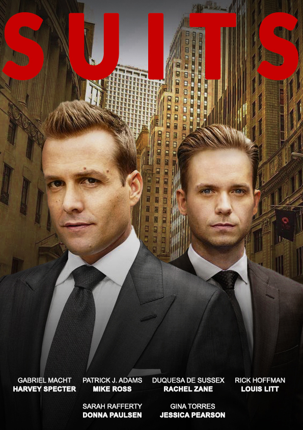

Universidade São Judas Tadeu (USJT)


InDesign - Identidade Visual e Diagramação da Revista Viajantes do Tempo.
Abra o Arquivo aqui.
Illustrator & Photoshop - Criação de uma Estampa com Técnica Rapport Inspirada na Culinária do Havaí.
Abra o Arquivo aqui.
Pessoal
3D

Blender - Cozinha
Cartaz

Photoshop - Cartaz Tipográfico Nem Que a Vaca Tussa

Photoshop - Cartaz Tipográfico Vida

Photoshop - Cartaz Duotone de Spider-Man Miles Morales

Photoshop - Cartaz Suits

Photoshop - Colagem Digital "Isqueiros"